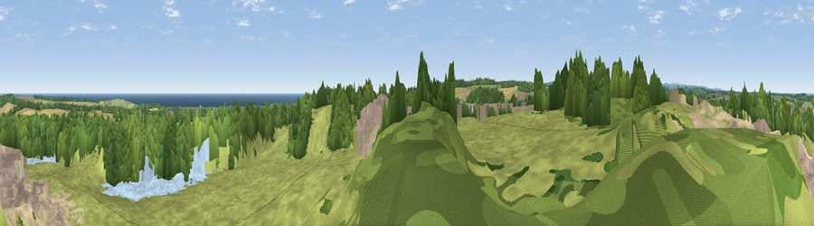

Viewpoint near Longhoughton
#9661 in England · top 39% of its area beats it · near LonghoughtonWhere it is
The exact computed spot (NU 23675 17225). Click the marker for map links.
The view, rendered

A 360° render of this exact spot computed from the terrain model, tree cover and land cover — summer colours, afternoon light, calibrated against photographs of famous viewpoints. Real trees, hedges and buildings will differ in detail.
The panorama
Grey silhouette: terrain skyline in each direction (720 bearings, Earth curvature and refraction included). Dashed green: skyline with trees (+15 m) and buildings (+8 m) as obstacles. Blue strip: how far the ground is visible on each bearing.
Where the view opens
Wedge length = distance to the farthest visible ground on that bearing (vegetation-aware). Rings at 10, 25 and 50 km.
What fills the view
43% grassland · 24% woodland · 11% cropland · 9% built-up · 6% water · 6% bare ground
Angular shares of the visible panorama (visual magnitude), not map area. Landscape diversity 0.65 (0–1 Shannon).
Key numbers
More beautiful places nearby
The staircase of upgrades: each row has a higher view potential than everything closer. Driving times are estimates from straight-line distance, calibrated against real road routing — check an actual route before setting out.
| Place | Direction | Drive | Score |
|---|---|---|---|
| Viewpoint near Dunstan | NE · 2 km | ~5 min | 71.9 |
| Ratcheugh Crag | SSW · 3 km | ~7 min | 75.8 |
| Viewpoint near Alnwick | WSW · 9 km | ~18 min | 77.7 |
| Cloudy Crags | WSW · 10 km | ~19 min | 80.2 |
| Viewpoint near Glanton | W · 15 km | ~27 min | 82.9 |
| Viewpoint near Eglingham | WNW · 17 km | ~29 min | 83.8 |
| Viewpoint near Chillingham | WNW · 18 km | ~30 min | 88.1 |
| Viewpoint near Easington | SSE · 110 km | ~134 min | 90.2 |
55.44832, -1.62727 · source: screening · position refined by local search. Computed location — check access rights before visiting.